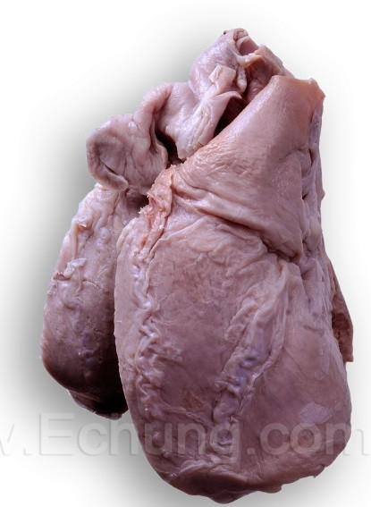
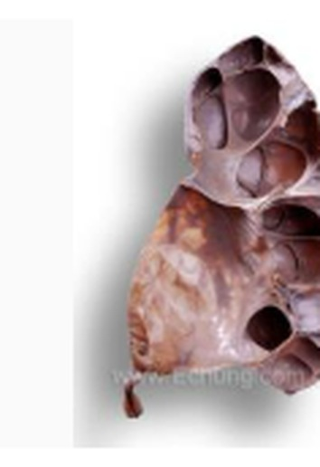
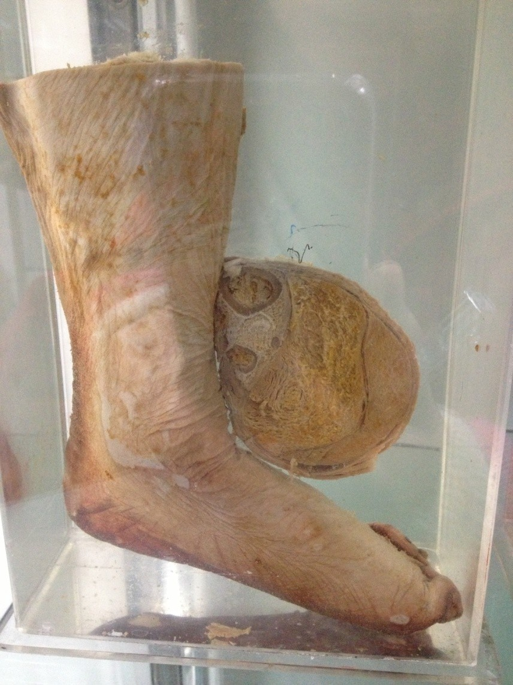
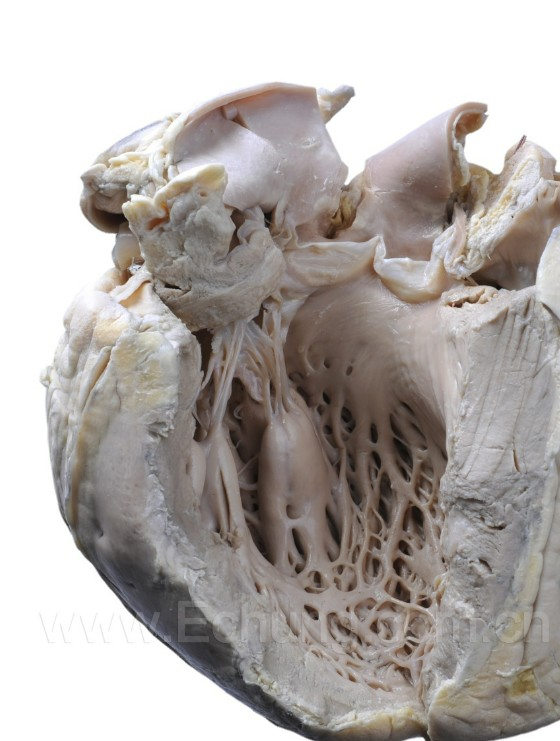
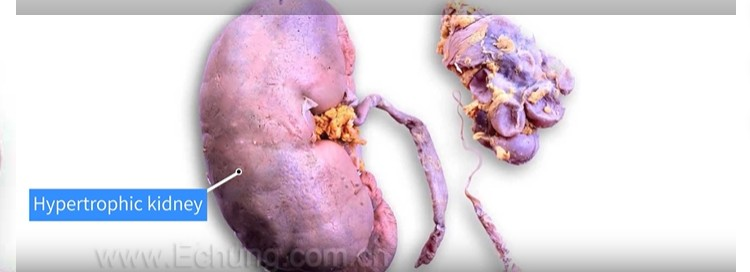
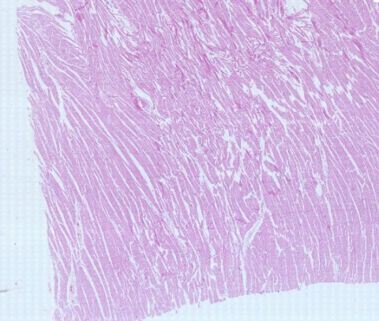
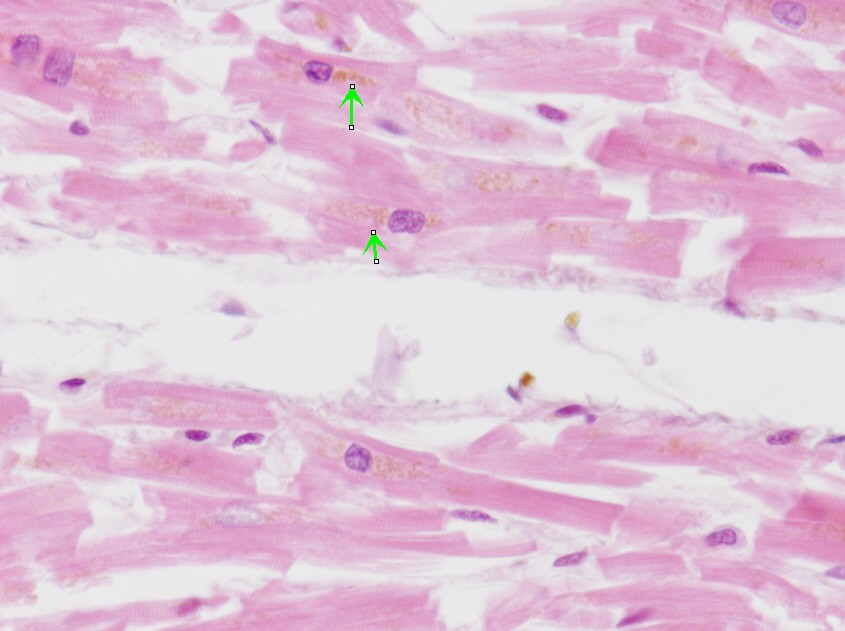
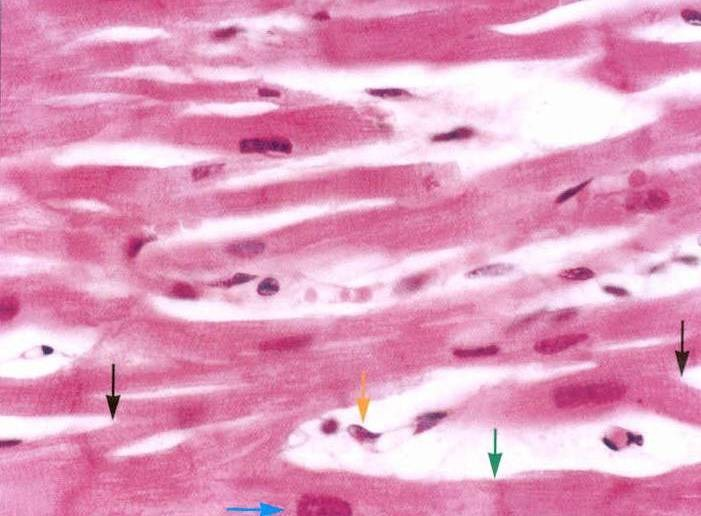
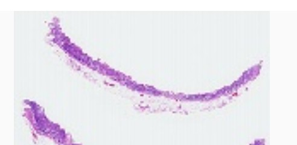
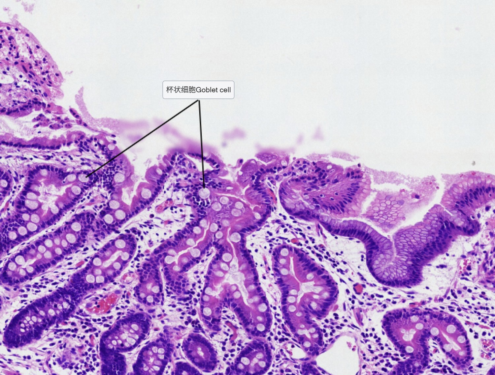

Every specimen on the list, on one card: what you see, why it looks that way, what to call it, and the sentence to write. Work each card by covering everything below What you see and producing the rest yourself — that is precisely the task you are set at the bench and in the exam.هر نمونهٔ فهرست، روی یک کارت: چه میبینید، چرا اینگونه است، چه نامش بگذارید و چه جملهای بنویسید. هر کارت را چنین کار کنید که هر چه زیر چه میبینید آمده بپوشانید و باقی را خودتان بسازید — دقیقاً همان کاری که سر میز و در امتحان از شما خواسته میشود.
By the end of this Part you should be able toدر پایان این بخش باید بتوانید
Describe and diagnose each of the six gross specimens unaided.هر شش نمونهٔ ماکروسکوپی را بدون کمک توصیف و تشخیص دهید.
Identify lipofuscin and intestinal metaplasia down the microscope.لیپوفوشین و متاپلازی رودهای را زیر میکروسکوپ تشخیص دهید.
Explain why an obstructed kidney is enlarged and atrophic at the same time.توضیح دهید چرا کلیهٔ دچار انسداد همزمان بزرگ و آتروفیک است.
Separate the pairs that look alike — atrophy from hypoplasia, hypertrophy from dilatation.جفتهای شبیه به هم را جدا کنید — آتروفی از هیپوپلازی، هیپرتروفی از اتساع.
Gross Specimen No. 1 · GrossBrown atrophy of the heartآتروفی قهوهای قلب
What you seeچه میبینید

Fig 4.1 Compare the outline with Fig 2.1: this heart is narrow and slender, and the coronary vessels wander instead of running straight.خطنمای آن را با شکل ۲.۱ مقایسه کنید: این قلب باریک و کشیده است و عروق کرونر بهجای مسیر مستقیم، پرپیچوخم میروند.
The heart is reduced in size, and the transverse diameter is reduced more obviously than the long axis — so the organ looks narrow and slender.قلب کوچک شده و قطر عرضی آشکارا بیشتر از محور طولی کاهش یافته — پس عضو باریک و کشیده بهنظر میرسد.
The colour is light brown rather than the normal red-brown.رنگ بهجای قرمز–قهوهای طبیعی، قهوهای روشن است.
The coronary arteries on the surface are highly meandering and serpentine — they take a winding, snake-like course.شریانهای کرونر روی سطح بسیار پرپیچوخم و مارپیچاند — مسیری پیچان و مارمانند دارند.
Why it looks like thatچرا این شکلی است
Two independent consequences of one process.The myocytes shrink by autophagy (§3.2), so muscle mass and therefore heart size fall. The lipofuscin left over from that autophagy accumulates in the myocyte cytoplasm and, summed over billions of cells, tints the whole organ brown. Meanwhile the epicardial coronary arteries keep their original length while the heart beneath them contracts — a fixed-length vessel on a shrinking surface has nowhere to go but into curves. The tortuosity is not vascular disease; it is geometry.دو پیامد مستقل از یک فرایند.میوسیتها با اتوفاژی کوچک میشوند (بخش ۳.۲)، پس تودهٔ عضلانی و در نتیجه اندازهٔ قلب کاهش مییابد. لیپوفوشین بازمانده از همان اتوفاژی در سیتوپلاسم میوسیت انباشته میشود و جمع آن در میلیاردها سلول، کل عضو را قهوهای میکند. در همین حال، شریانهای کرونر اپیکاردی طول اصلی خود را حفظ میکنند در حالیکه قلب زیرشان جمع میشود — رگی با طول ثابت روی سطحی در حال کوچکشدن، جایی جز پیچخوردن ندارد. پرپیچوخمی، بیماری عروقی نیست؛ هندسه است.
Pathological diagnosisتشخیص پاتولوژیک
Brown atrophy of the heartآتروفی قهوهای قلب
Write it like thisاینگونه بنویسید
Organ: Heart. Description: The heart is reduced in size, with the transverse diameter reduced disproportionately, giving a slender outline. The colour is light brown throughout. The epicardial coronary arteries follow a markedly tortuous, serpentine course over the surface. No focal lesion, scar or chamber dilatation is seen. Diagnosis: Brown atrophy of the heart.عضو: قلب. توصیف: قلب کوچک شده و قطر عرضی بهطور نامتناسب کاهش یافته که خطنمایی کشیده به آن داده است. رنگ در سراسر، قهوهای روشن است. شریانهای کرونر اپیکاردی مسیری آشکارا پرپیچوخم و مارپیچ روی سطح دارند. ضایعهٔ کانونی، اسکار یا اتساع حفره دیده نمیشود. تشخیص: آتروفی قهوهای قلب.
Clinical Correlation — who this heart belonged toارتباط بالینی — این قلب از آنِ چه کسی بود
Brown atrophy is the heart of old age or chronic wasting — advanced cancer, tuberculosis, severe malnutrition. The old term is cardiac cachexia. It is the opposite end of the spectrum from the specimen in §4.2, and the two are often shown side by side for exactly that reason.آتروفی قهوهای، قلبِ سالمندی یا تحلیل مزمن است — سرطان پیشرفته، سل، سوءتغذیهٔ شدید. اصطلاح قدیمی آن کاشکسی قلبی است. این سر دیگر طیفی است که نمونهٔ بخش ۴.۲ در آن قرار دارد و به همین دلیل این دو اغلب کنار هم نشان داده میشوند.
Gross Specimen No. 2 · GrossAtrophy of the brainآتروفی مغز
What you seeچه میبینیدFig 4.2 Narrowed gyri and correspondingly widened sulci. The brain has pulled away from its own surface.شیارهای مغزی پهن و چینها باریک شدهاند. مغز از سطح خودش عقب نشسته است.
The brain is reduced in size and weight.مغز کوچک و سبک شده است.
The gyri are narrowed and the sulci are correspondingly widened and deepened.چینها باریک و شیارها به همان نسبت پهن و عمیق شدهاند.
The leptomeninges appear loose over the surface, and (on a coronal section) the ventricles are dilated to fill the space.لپتومننژها روی سطح شل بهنظر میرسند و در برش کرونال، بطنها برای پرکردن فضا متسعاند.
Why it looks like thatچرا این شکلی است
The deck attributes it to lack of nutrients — chronic ischaemia and undernutrition of the cortex.Neurons are permanent cells. They cannot be replaced, so loss of neurons and of their dendritic trees is permanent volume loss. The gyri, which are made of cortex, shrink; the sulci between them are spaces, so they can only widen. The skull cannot shrink to match, so the vacated volume is taken up by cerebrospinal fluid — which is why the ventricles dilate. That dilatation is passive and is called hydrocephalus ex vacuo: fluid filling a space, not fluid under pressure.اسلایدها آن را به کمبود مواد مغذی نسبت میدهند — ایسکمی مزمن و سوءتغذیهٔ قشر مغز.نورونها سلولهایی دائمیاند. جایگزین نمیشوند، پس از دست رفتن نورونها و درخت دندریتیشان، از دست رفتن دائمی حجم است. چینها که از قشر ساخته شدهاند کوچک میشوند؛ شیارهای میانشان فضا هستند، پس فقط میتوانند پهن شوند. جمجمه نمیتواند خود را با آن منطبق کند، پس حجم خالیشده را مایع مغزی–نخاعی پر میکند — و به همین دلیل بطنها متسع میشوند. این اتساع غیرفعال است و هیدروسفالی اکسواکوئو نام دارد: مایعی که فضا را پر میکند، نه مایعی تحت فشار.
Pathological diagnosisتشخیص پاتولوژیک
Atrophy of the brain, due to lack of nutrientsآتروفی مغز، ناشی از کمبود مواد مغذی
Write it like thisاینگونه بنویسید
Organ: Brain. Description: The brain is reduced in size. The gyri are narrowed and the intervening sulci are widened and deepened, most evidently over the frontal and temporal lobes. The leptomeninges lie loosely over the shrunken surface. Diagnosis: Cerebral atrophy.عضو: مغز. توصیف: مغز کوچک شده است. چینها باریک و شیارهای میانی پهن و عمیق شدهاند، آشکارتر از همه روی لوبهای پیشانی و گیجگاهی. لپتومننژها شل روی سطح جمعشده قرار گرفتهاند. تشخیص: آتروفی مغزی.
Gross Specimen No. 3 · GrossRenal compression atrophy — obstruction of the ureterآتروفی فشاری کلیه — انسداد حالب
What you seeچه میبینید

Fig 4.3 The cut surface: dilated pelvis and calyces, with the parenchyma reduced to a thin rim.سطح مقطع: لگنچه و کالیسهای متسع، با پارانشیمی که به حاشیهای نازک تقلیل یافته.
The kidney is enlarged, and the surface is uneven and nodular.کلیه بزرگ شده و سطح آن ناهموار و ندولار است.
On the cut surface: the renal pelvis and calyces are highly dilated.در سطح مقطع: لگنچه و کالیسها بهشدت متسعاند.
The renal parenchyma is significantly atrophied and thinned.پارانشیم کلیه بهطور قابلتوجه آتروفیک و نازک شده است.
The boundary between cortex and medulla is unclear.مرز قشر و مدولا نامشخص است.
Why it looks like thatچرا این شکلی است
An obstruction below the kidney turns the collecting system into a pressurised bag.Urine is produced continuously but cannot escape past the obstructed ureter. It backs up and the pelvis and calyces dilate — that is why the organ as a whole is larger. The rising pressure then acts inwards on the parenchyma from the medulla outwards, compressing tubules and the small vessels that feed them. Compression is one of the listed causes of atrophy (§3.2), and it acts here by two routes at once: direct mechanical pressure on the tubular cells, and ischaemia from compressed vasculature. The pyramids flatten first because they are nearest the dilated calyces, which is why the cortico-medullary boundary blurs. The nodular external surface is the cortex bulging between the underlying dilated calyces.انسدادی زیر کلیه، سیستم جمعکننده را به کیسهای تحت فشار تبدیل میکند.ادرار پیوسته ساخته میشود اما نمیتواند از حالب مسدود بگذرد. پسزده میشود و لگنچه و کالیسها متسع میگردند — به همین دلیل کل عضو بزرگتر است. سپس فشار فزاینده از مدولا به بیرون بر پارانشیم وارد میشود و توبولها و رگهای کوچک تغذیهکنندهٔ آنها را فشرده میکند. فشار یکی از علل فهرستشدهٔ آتروفی است (بخش ۳.۲) و اینجا همزمان از دو راه عمل میکند: فشار مکانیکی مستقیم بر سلولهای توبولی، و ایسکمی ناشی از فشردهشدن عروق. هرمها زودتر مسطح میشوند چون به کالیسهای متسع نزدیکترند و به همین دلیل مرز قشری–مدولاری محو میشود. سطح بیرونی ندولار، برجستگی قشر میان کالیسهای متسع زیرین است.
Pathological diagnosisتشخیص پاتولوژیک
Renal compression atrophy (hydronephrosis) caused by obstruction of the ureterآتروفی فشاری کلیه (هیدرونفروز) ناشی از انسداد حالب
Write it like thisاینگونه بنویسید
Organ: Kidney. Description: The kidney is enlarged with an uneven, nodular external surface. The cut surface shows marked dilatation of the renal pelvis and calyces. The parenchyma is markedly thinned and atrophic, and the cortico-medullary junction is indistinct. Diagnosis: Compression atrophy of the kidney (hydronephrosis) secondary to ureteric obstruction.عضو: کلیه. توصیف: کلیه بزرگ شده و سطح بیرونی ناهموار و ندولار دارد. سطح مقطع، اتساع بارز لگنچه و کالیسها را نشان میدهد. پارانشیم بهشدت نازک و آتروفیک است و محل اتصال قشری–مدولاری نامشخص است. تشخیص: آتروفی فشاری کلیه (هیدرونفروز) ثانویه به انسداد حالب.
High-Yield — an organ can be bigger and atrophic at onceنکتهٔ کلیدی — عضو میتواند همزمان بزرگتر و آتروفیک باشد
This is the single most examined point on this specimen, and it catches people every year. Atrophy is a statement about the parenchyma, not about the organ’s outline. The hydronephrotic kidney is larger than normal because it contains a bag of urine; the functioning tissue within it has been crushed to a rim. If the question asks whether the kidney is enlarged, the answer is yes; if it asks whether it is atrophic, the answer is also yes; and both are in the same sentence of the specimen description.این پُرپرسشترین نکتهٔ این نمونه است و هر سال عدهای را میگیرد. آتروفی گزارهای دربارهٔ پارانشیم است، نه دربارهٔ خطنمای عضو. کلیهٔ هیدرونفروتیک از طبیعی بزرگتر است چون کیسهای از ادرار در خود دارد؛ بافت کارآمد درونش به حاشیهای له شده است. اگر سؤال بپرسد آیا کلیه بزرگ شده، پاسخ بله است؛ اگر بپرسد آیا آتروفیک است، پاسخ باز هم بله است؛ و هر دو در یک جملهٔ توصیف نمونه آمدهاند.
Gross Specimen No. 4 · GrossLeprotic atrophy of the lower extremityآتروفی جذامی اندام تحتانی
What you seeچه میبینید

Fig 4.4 Leg and toes, with a cross-section of the calf displayed alongside. Note the shortened, deformed toes and the thin, smooth skin.ساق و انگشتان، همراه با مقطع عرضی ساق در کنار آن. به انگشتان کوتاه و بدشکل و پوست نازک و صاف توجه کنید.
Shortening and deformation of the toes; mild thinning of the calf.کوتاهی و بدشکلی انگشتان؛ نازکشدن خفیف ساق.
The skin becomes thinner and smoother — it has lost its normal texture and appendages.پوست نازکتر و صافتر شده — بافت و ضمائم طبیعی خود را از دست داده.
The cross-section of the calf shows thinning of the tibial and fibular cortex.مقطع عرضی ساق، نازکشدن قشر استخوان درشتنی و نازکنی را نشان میدهد.
Muscle mass is reduced or essentially absent, replaced by adipose tissue.تودهٔ عضلانی کاهش یافته یا عملاً از بین رفته و جای آن را بافت چربی گرفته است.
Why it looks like thatچرا این شکلی است
One organism, acting on nerves, producing atrophy of four different tissues.Mycobacterium leprae preferentially invades peripheral nerves, because it grows best at the cooler temperatures of the skin and superficial nerves of the limbs. Destroying the nerve removes the trophic and motor supply at a stroke, and each tissue then atrophies for its own reason: muscle from denervation and disuse, bone from loss of the mechanical loading that maintains it (Wolff’s law — bone that is not stressed is resorbed), skin from loss of autonomic and sensory innervation. The shortening and deformity of the toes is different in kind: it follows from sensory loss, which allows repeated unnoticed trauma, ulceration, infection and resorption of the digits. The fat is not new growth — it simply remains where the muscle has gone.یک ارگانیسم، که با اثر بر اعصاب، در چهار بافت متفاوت آتروفی ایجاد میکند.Mycobacterium leprae ترجیحاً به اعصاب محیطی حمله میکند، چون در دمای خنکتر پوست و اعصاب سطحی اندامها بهتر رشد میکند. تخریب عصب، تغذیهٔ تروفیک و حرکتی را یکباره برمیدارد و هر بافت به دلیل خودش آتروفی میکند: عضله از دِنِرواسیون و بیمصرفی، استخوان از دست رفتن بارگذاری مکانیکی نگهدارنده (قانون وولف — استخوانی که تحت تنش نباشد بازجذب میشود)، پوست از دست رفتن عصبدهی خودکار و حسی. کوتاهی و بدشکلی انگشتان از نوع دیگری است: پیامد از دست رفتن حس است که آسیب مکرر بدون احساس، زخم، عفونت و بازجذب بندهای انگشت را ممکن میسازد. چربی رشد تازه نیست — صرفاً جایی مانده که عضله رفته است.
Pathological diagnosisتشخیص پاتولوژیک
Leprotic atrophy of the lower extremityآتروفی جذامی اندام تحتانی
Write it like thisاینگونه بنویسید
Organ: Lower limb (leg and foot). Description: The toes are shortened and deformed and the calf is mildly thinned. The skin is thin and abnormally smooth. The cut cross-section of the calf shows thinning of the cortex of both tibia and fibula, with marked reduction or loss of skeletal muscle, which has been replaced by adipose tissue. Diagnosis: Neurogenic (leprotic) atrophy of the lower extremity.عضو: اندام تحتانی (ساق و پا). توصیف: انگشتان کوتاه و بدشکل و ساق اندکی نازک شده است. پوست نازک و بهطور غیرطبیعی صاف است. مقطع عرضی ساق، نازکشدن قشر هر دو استخوان درشتنی و نازکنی را نشان میدهد، با کاهش بارز یا فقدان عضلهٔ اسکلتی که جای آن را بافت چربی گرفته است. تشخیص: آتروفی نوروژنیک (جذامی) اندام تحتانی.
Gross Specimen No. 21 · GrossHypertrophy of the heartهیپرتروفی قلب
What you seeچه میبینید

Fig 4.5 The cut left ventricle. Measure the wall against the normal 12–15 mm, and note the trabeculae carneae standing out on the endocardial surface.بطن چپ بریدهشده. ضخامت دیواره را با حد طبیعی ۱۲ تا ۱۵ میلیمتر بسنجید و به ترابکولهای برجسته روی سطح اندوکارد توجه کنید.
The heart is enlarged and heavier than normal.قلب بزرگ و سنگینتر از طبیعی است.
The left ventricular wall is thickened — well above the normal 12–15 mm.دیوارهٔ بطن چپ ضخیم شده — بسیار بالاتر از حد طبیعی ۱۲ تا ۱۵ میلیمتر.
The left heart chamber is dilated.حفرهٔ قلب چپ متسع است.
The papillary muscles and trabeculae carneae are prominent and thickened.عضلات پاپیلاری و ترابکولهای گوشتی برجسته و ضخیم شدهاند.
Why it looks like thatچرا این شکلی است
Sustained overload drove each myocyte to add sarcomeres (§3.3), and the wall thickened as a result.Because cardiac muscle is a permanent tissue, the only available response to a raised workload is for existing cells to enlarge — the number of myocytes does not change. The thickened wall is the sum of billions of individually enlarged cells.اضافهبار پایدار هر میوسیت را واداشت سارکومر بیفزاید (بخش ۳.۳) و دیواره در نتیجه ضخیم شد.چون عضلهٔ قلبی بافتی دائمی است، تنها پاسخ در دسترس به افزایش بار کاری، بزرگشدن سلولهای موجود است — تعداد میوسیتها تغییر نمیکند. دیوارهٔ ضخیمشده، حاصلجمع میلیاردها سلول منفرداً بزرگشده است.
Pathological diagnosisتشخیص پاتولوژیک
Cardiac hypertrophy — left ventricularهیپرتروفی قلب — بطن چپ
Write it like thisاینگونه بنویسید
Organ: Heart. Description: The heart is enlarged. On the cut surface the left ventricular wall is markedly thickened, and the papillary muscles and trabeculae carneae are prominent. The left ventricular cavity is dilated. Diagnosis: Left ventricular hypertrophy.عضو: قلب. توصیف: قلب بزرگ شده است. در سطح مقطع، دیوارهٔ بطن چپ آشکارا ضخیم و عضلات پاپیلاری و ترابکولهای گوشتی برجستهاند. حفرهٔ بطن چپ متسع است. تشخیص: هیپرتروفی بطن چپ.
Exam Trap — the deck says “central hypertrophy”. Read this before the exam.دام امتحانی — اسلاید میگوید «هیپرتروفی مرکزی». پیش از امتحان این را بخوانید.
The specimen description reads: “the left ventricular wall is thickened, and the left heart chamber is dilated (central hypertrophy)”. Those two features do not normally go together, and the bracket is almost certainly a translation of 向心性肥大, which is standard Chinese for concentric hypertrophy — the pressure-overload pattern with a thick wall and a normal or reduced cavity. Eccentric hypertrophy (离心性肥大) is the volume-overload pattern, with a dilated cavity.
So the safest answer in an exam: this is left ventricular hypertrophy, and if you are asked to classify it, say that a thickened wall with a non-dilated cavity is concentric (pressure overload — hypertension, aortic stenosis), while a thickened wall with a dilated cavity is eccentric (volume overload — aortic or mitral regurgitation), and state which one the specimen in front of you actually shows. Describing what you see protects you from an ambiguity in the label.توصیف نمونه چنین است: «دیوارهٔ بطن چپ ضخیم شده و حفرهٔ قلب چپ متسع است (هیپرتروفی مرکزی)». این دو ویژگی معمولاً با هم نمیآیند و عبارت داخل پرانتز تقریباً بهیقین ترجمهٔ 向心性肥大 است، که در چینی معادل استاندارد هیپرتروفی متحدالمرکز است — الگوی اضافهبار فشاری با دیوارهٔ ضخیم و حفرهٔ طبیعی یا کوچکشده. هیپرتروفی خارجمرکز (离心性肥大) الگوی اضافهبار حجمی با حفرهٔ متسع است.
پس ایمنترین پاسخ در امتحان: این هیپرتروفی بطن چپ است، و اگر خواستند طبقهبندی کنید بگویید دیوارهٔ ضخیم با حفرهٔ غیرمتسع یعنی متحدالمرکز (اضافهبار فشاری — پرفشاری خون، تنگی آئورت) و دیوارهٔ ضخیم با حفرهٔ متسع یعنی خارجمرکز (اضافهبار حجمی — نارسایی آئورت یا میترال)، و بگویید نمونهٔ پیش رویتان کدام را نشان میدهد. توصیف آنچه میبینید، شما را از ابهام برچسب مصون میدارد.
Gross Specimen No. 22 · GrossCompensatory hypertrophy of the kidneyهیپرتروفی جبرانی کلیه

Fig 4.6 The two kidneys from one patient, shown together. On the left, the enlarged compensating kidney; on the right, the congenitally dysplastic one. The teaching value is entirely in the comparison — neither organ means much alone.دو کلیهٔ یک بیمار، کنار هم. سمت چپ، کلیهٔ بزرگشدهٔ جبرانکننده؛ سمت راست، کلیهٔ دیسپلاستیک مادرزادی. ارزش آموزشی کاملاً در مقایسه است — هیچیک بهتنهایی معنای چندانی ندارد.
What you seeچه میبینید
One kidney is significantly reduced in volume — congenital dysplasia.حجم یک کلیه بهطور قابلتوجه کاهش یافته — دیسپلازی مادرزادی.
The other kidney is increased in volume — compensatory hypertrophy.حجم کلیهٔ دیگر افزایش یافته — هیپرتروفی جبرانی.
On the cut surface of the enlarged kidney, the renal cortex is thickened.در سطح مقطع کلیهٔ بزرگشده، قشر کلیه ضخیم است.
The architecture of the enlarged kidney is otherwise normal — no dilatation, no scarring.معماری کلیهٔ بزرگشده در بقیهٔ موارد طبیعی است — بدون اتساع، بدون اسکار.
Why it looks like thatچرا این شکلی است
One kidney is doing the work of two, and has grown to match.When functioning renal mass is lost, the surviving nephrons receive an increased filtration load. Growth factors and mechanical signals drive the tubular cells to enlarge — and, because tubular epithelium is a stable tissue, some of them also divide. The cortex thickens because that is where the tubules are. This is the same principle that lets a living donor give away a kidney: the remaining one enlarges and recovers most of the lost function.یک کلیه کار دو کلیه را انجام میدهد و به همان اندازه رشد کرده است.وقتی تودهٔ کارآمد کلیوی از دست میرود، نفرونهای بازمانده بار فیلتراسیون بیشتری دریافت میکنند. فاکتورهای رشد و پیامهای مکانیکی، سلولهای توبولی را به بزرگشدن وامیدارند — و چون اپیتلیوم توبولی بافتی پایدار است، برخی از آنها تقسیم هم میشوند. قشر ضخیم میشود چون توبولها آنجا هستند. این همان اصلی است که به اهداکنندهٔ زنده اجازه میدهد یک کلیه ببخشد: کلیهٔ باقیمانده بزرگ میشود و بیشتر عملکرد ازدسترفته را بازمییابد.
Pathological diagnosisتشخیص پاتولوژیک
Compensatory hypertrophy of the kidney, secondary to contralateral congenital dysplasiaهیپرتروفی جبرانی کلیه، ثانویه به دیسپلازی مادرزادی سمت مقابل
Write it like thisاینگونه بنویسید
Organ: Both kidneys. Description: The two kidneys are markedly unequal. One is small and malformed, consistent with congenital dysplasia. The other is uniformly enlarged, with a smooth capsule and no dilatation of the pelvis; its cut surface shows a thickened cortex with preserved cortico-medullary demarcation. Diagnosis: Compensatory hypertrophy of the kidney, with contralateral congenital dysplasia.عضو: هر دو کلیه. توصیف: دو کلیه آشکارا نابرابرند. یکی کوچک و بدشکل است، سازگار با دیسپلازی مادرزادی. دیگری بهطور یکنواخت بزرگ شده، کپسول صاف دارد و لگنچهاش متسع نیست؛ سطح مقطعش قشری ضخیم با مرز قشری–مدولاری حفظشده نشان میدهد. تشخیص: هیپرتروفی جبرانی کلیه، همراه با دیسپلازی مادرزادی سمت مقابل.
4.3Microscopic Slidesلامهای میکروسکوپی
Slide 1 · MicroAtrophy of the heart — myocardial brown atrophyآتروفی قلب — آتروفی قهوهای میوکارد

Fig 4.74×. Start here. The architecture is preserved — this is still recognisable myocardium — but the fibres are thin and the spaces between them are wide.۴×. از اینجا شروع کنید. معماری حفظ شده — این هنوز میوکارد قابلتشخیص است — اما رشتهها نازک و فاصلهٔ میانشان زیاد است.

Fig 4.840×. The diagnostic finding: yellow-brown granular pigment clustered at the poles of the nuclei. Green arrows mark it.۴۰×. یافتهٔ تشخیصی: رنگدانهٔ دانهدار زرد–قهوهای خوشهشده در دو قطب هسته. پیکانهای سبز نشانش میدهند.

Fig 4.940×. Thinned, wavy fibres with widened interstitial spaces between them. Nuclei look crowded because the cytoplasm around them has gone.۴۰×. رشتههای نازک و موجدار با فضاهای بینابینی پهنشده. هستهها متراکم بهنظر میرسند چون سیتوپلاسم پیرامونشان رفته است.
What you seeچه میبینید
Low power: myocardial architecture is preserved, but the muscle fibres are thinner than normal and the interstitial spaces between them are widened.بزرگنمایی پایین: معماری میوکارد حفظ شده، اما رشتههای عضلانی نازکتر از طبیعی و فضاهای بینابینی میانشان پهنتر است.
High power:yellow-brown granular pigment in the cytoplasm, concentrated at both poles of the nucleus.بزرگنمایی بالا:رنگدانهٔ دانهدار زرد–قهوهای در سیتوپلاسم، متمرکز در دو قطب هسته.
Nuclei appear relatively crowded and prominent against the reduced cytoplasm.هستهها در برابر سیتوپلاسم کاهشیافته نسبتاً متراکم و برجسته بهنظر میرسند.
Some fibre separation and rupture may be visible.گاه جدایی و پارگی رشتهها دیده میشود.
Why it looks like thatچرا این شکلی است
Each finding is one step of the mechanism in §3.2, made visible.The thin fibres are the autophagy and proteasome degradation of contractile protein. The widened interstitium is not new tissue — it is the space vacated as the fibres narrowed, which is why the stroma looks more prominent without having grown. The pigment is lipofuscin, the indigestible residue of autophagocytosed membrane lipid; it sits at the nuclear poles because that is where the cell’s lysosomes and Golgi are concentrated. Because it accumulates over a lifetime and is never cleared, lipofuscin is called the “wear-and-tear” pigment — its presence dates the process as chronic.هر یافته، یک گام از مکانیسم بخش ۳.۲ است که قابلرؤیت شده.رشتههای نازک، حاصل اتوفاژی و تجزیهٔ پروتئازومی پروتئین انقباضیاند. بینابینی پهنشده بافت تازه نیست — فضایی است که با باریکشدن رشتهها خالی شده، و به همین دلیل استروما برجستهتر بهنظر میرسد بیآنکه رشد کرده باشد. رنگدانه همان لیپوفوشین است، باقیماندهٔ غیرقابلهضم لیپید غشایی اتوفاگوسیتشده؛ در قطبهای هسته مینشیند چون لیزوزومها و گلژی سلول آنجا متمرکزند. چون در طول عمر انباشته میشود و هرگز پاک نمیگردد، لیپوفوشین را رنگدانهٔ «فرسودگی» مینامند — حضورش نشان میدهد فرایند مزمن است.
Pathological diagnosisتشخیص پاتولوژیک
Brown atrophy of the myocardiumآتروفی قهوهای میوکارد
Write it like thisاینگونه بنویسید
Tissue: Myocardium. Description: The overall architecture of the myocardium is preserved. The muscle fibres are thinner than normal and the interstitial spaces between them are correspondingly widened. At high power, fine yellow-brown granular pigment is present in the cytoplasm of many myocytes, concentrated at both poles of the nucleus. No inflammatory infiltrate, necrosis or fibrosis is seen. Diagnosis: Brown atrophy of the heart.بافت: میوکارد. توصیف: معماری کلی میوکارد حفظ شده است. رشتههای عضلانی نازکتر از طبیعی و فضاهای بینابینی میانشان به همان نسبت پهنتر است. در بزرگنمایی بالا، رنگدانهٔ دانهدار ظریف زرد–قهوهای در سیتوپلاسم بسیاری از میوسیتها و متمرکز در دو قطب هسته دیده میشود. ارتشاح التهابی، نکروز یا فیبروز دیده نمیشود. تشخیص: آتروفی قهوهای قلب.
Bench Technique — this is the slide you must drawفن آزمایشگاه — این همان لامی است که باید بکشید
Slide 1 is on the homework list as a drawing. Draw it at 40×, not 4×, and include four things: a few thinned muscle fibres with their striations, the widened space between them, a nucleus, and the granular pigment at the nuclear poles — drawn as small stippled dots, not as a solid patch. Label the pigment “yellow-brown granular pigment (lipofuscin)”. A drawing without the pigment has missed the diagnosis, however neat it is.لام ۱ در فهرست تکلیف بهعنوان نقاشی آمده است. آن را در ۴۰× بکشید نه ۴×، و چهار چیز را وارد کنید: چند رشتهٔ عضلانی نازکشده با خطوط عرضیشان، فضای پهنشدهٔ میانشان، یک هسته، و رنگدانهٔ دانهدار در قطبهای هسته — بهصورت نقطههای ریز پراکنده، نه یک لکهٔ توپر. رنگدانه را چنین برچسب بزنید: «رنگدانهٔ دانهدار زرد–قهوهای (لیپوفوشین)». نقاشی بدون رنگدانه، تشخیص را از دست داده، هر قدر هم تمیز باشد.
Slide 2 (sample slide 84) · MicroGastric mucosa with intestinal metaplasiaمخاط معده با متاپلازی رودهای

Fig 4.104×. A ribbon of gastric mucosa. At this power you establish the organ and see that the surface is intact and the glands are still arranged perpendicular to it.۴×. نواری از مخاط معده. در این بزرگنمایی، عضو را مشخص میکنید و میبینید که سطح سالم است و غدد هنوز عمود بر آن آرایش یافتهاند.

Fig 4.1140×. The diagnostic cells: goblet cells (杯状细胞), labelled, sitting in gastric mucosa where they have no business being.۴۰×. سلولهای تشخیصی: سلولهای جامی، برچسبخورده، نشسته در مخاط معده جایی که اصلاً نباید باشند.
What you seeچه میبینید
Low power: gastric mucosa, recognised by its surface foveolae and perpendicular glands; the overall architecture is preserved.بزرگنمایی پایین: مخاط معده، با چالههای سطحی و غدد عمودش شناخته میشود؛ معماری کلی حفظ شده است.
High power: scattered among the gastric epithelium are goblet cells — tall cells with a clear, mucin-filled cup of cytoplasm pushing the nucleus down to the base.بزرگنمایی بالا: پراکنده میان اپیتلیوم معده، سلولهای جامی — سلولهای بلند با جامی شفاف و پر از موسین که هسته را به قاعده میراند.
The epithelium in those areas looks intestinal rather than gastric — a flatter, absorptive-type surface.اپیتلیوم در آن نواحی بهجای معدی، رودهای بهنظر میرسد — سطحی مسطحتر و از نوع جذبی.
A chronic inflammatory infiltrate — lymphocytes and plasma cells — is present in the lamina propria.ارتشاح التهابی مزمن — لنفوسیت و پلاسماسل — در لامینا پروپریا دیده میشود.
Why it looks like thatچرا این شکلی است
The stem cells of the gastric glands have been reprogrammed (§3.5).Chronic gastritis — very often Helicobacter pylori — keeps the mucosa under sustained chemical and inflammatory attack. The gastric stem cells in the gland necks respond by differentiating along an intestinal pathway instead, producing goblet cells and absorptive enterocytes that tolerate the environment better. Note what has not happened: no gastric cell has turned into an intestinal cell. The lymphocytes and plasma cells in the lamina propria are the evidence of the chronic irritation that caused it — which is why the slide is properly called gastritis with intestinal metaplasia.سلولهای بنیادی غدد معده بازبرنامهریزی شدهاند (بخش ۳.۵).گاستریت مزمن — بسیار اغلب هلیکوباکتر پیلوری — مخاط را زیر حملهٔ شیمیایی و التهابی پیوسته نگه میدارد. سلولهای بنیادی معدی در گردن غدد پاسخ میدهند و بهجای آن در مسیر رودهای تمایز مییابند و سلول جامی و انتروسیت جذبی میسازند که محیط را بهتر تحمل میکنند. توجه کنید چه رخ نداده: هیچ سلول معدیای به سلول رودهای تبدیل نشده. لنفوسیتها و پلاسماسلهای لامینا پروپریا، شاهدِ همان تحریک مزمنیاند که این را پدید آورده — و به همین دلیل نام درست لام گاستریت همراه با متاپلازی رودهای است.
Pathological diagnosisتشخیص پاتولوژیک
Chronic gastritis with intestinal metaplasiaگاستریت مزمن با متاپلازی رودهای
Write it like thisاینگونه بنویسید
Tissue: Gastric mucosa. Description: The mucosal architecture is preserved. Within the surface and glandular epithelium there are numerous goblet cells, containing a clear apical mucin vacuole that displaces the nucleus basally, together with epithelium of intestinal absorptive type. The lamina propria contains a chronic inflammatory infiltrate of lymphocytes and plasma cells. No dysplasia or malignancy is identified. Diagnosis: Chronic gastritis with intestinal metaplasia.بافت: مخاط معده. توصیف: معماری مخاط حفظ شده است. درون اپیتلیوم سطحی و غددی، سلولهای جامی فراوانی دیده میشود که واکوئل موسینی شفافی در رأس دارند و هسته را به قاعده میرانند، همراه با اپیتلیوم از نوع جذبی رودهای. لامینا پروپریا ارتشاح التهابی مزمن از لنفوسیت و پلاسماسل دارد. دیسپلازی یا بدخیمی شناسایی نشد. تشخیص: گاستریت مزمن با متاپلازی رودهای.
High-Yield — the one cell that makes the diagnosisنکتهٔ کلیدی — سلولی که تشخیص را میگذارد
A goblet cell in the stomach is intestinal metaplasia. Goblet cells are normal in intestine and normal in bronchus; in gastric mucosa they do not belong, and finding one is the whole diagnosis. Note also the clinical weight of this slide: intestinal metaplasia is a recognised precursor of intestinal-type gastric adenocarcinoma, which is why patients who have it are placed under endoscopic surveillance.سلول جامی در معده یعنی متاپلازی رودهای. سلول جامی در روده طبیعی است و در برونش هم طبیعی؛ در مخاط معده جایی ندارد و یافتن یکی، تمام تشخیص است. به وزن بالینی این لام هم توجه کنید: متاپلازی رودهای پیشساز شناختهشدهٔ آدنوکارسینوم معده از نوع رودهای است و به همین دلیل بیمارانی که آن را دارند تحت پایش آندوسکوپیک قرار میگیرند.
4.4Tell Them Apart — the Look-Alikesتفکیک موارد شبیه به هم
Table 4.1 Pairs that are confused, and the one feature that separates themجدول ۴.۱ — جفتهایی که خلط میشوند و تنها ویژگی جداکنندهٔ آنها
Pairجفت
They shareوجه اشتراک
The deciding featureویژگی تعیینکننده
Atrophy vs hypoplasiaآتروفی در برابر هیپوپلازی
A small organعضوی کوچک
Did it ever reach normal size? Atrophy: yes, then shrank. Hypoplasia: never did — a developmental defectآیا هرگز به اندازهٔ طبیعی رسید؟ آتروفی: بله، سپس کوچک شد. هیپوپلازی: هرگز — نقص تکاملی
Hypertrophy vs hyperplasiaهیپرتروفی در برابر هیپرپلازی
A large organعضوی بزرگ
Bigger cells or more cells? Decided by the tissue: permanent tissue can only hypertrophyسلولهای بزرگتر یا سلولهای بیشتر؟ بافت تعیین میکند: بافت دائمی فقط میتواند هیپرتروفی کند
Hypertrophy vs dilatationهیپرتروفی در برابر اتساع
An enlarged heartقلبی بزرگشده
Measure the wall. Hypertrophy thickens it; pure dilatation stretches and thins it while the cavity enlargesدیواره را اندازه بگیرید. هیپرتروفی ضخیمش میکند؛ اتساع خالص آن را میکشد و نازک میکند در حالیکه حفره بزرگ میشود
Metaplasia vs dysplasiaمتاپلازی در برابر دیسپلازی
An abnormal epithelium at a siteاپیتلیومی غیرطبیعی در یک محل
Are the cells well differentiated? Metaplasia: yes — orderly, mature, just the wrong type. Dysplasia: no — disordered, atypical nuclei, loss of maturation. Metaplasia is reversible; dysplasia is pre-malignantآیا سلولها بهخوبی تمایزیافتهاند؟ متاپلازی: بله — منظم، بالغ، فقط از نوع نادرست. دیسپلازی: خیر — نامنظم، هستههای آتیپیک، از دست رفتن بلوغ. متاپلازی برگشتپذیر است؛ دیسپلازی پیشبدخیم
Lipofuscin vs haemosiderinلیپوفوشین در برابر هموسیدرین
Prussian blue stain. Haemosiderin contains iron and stains blue; lipofuscin does not and stays brown. Context helps too: lipofuscin in atrophic heart and liver, haemosiderin after haemorrhage or congestionرنگآمیزی آبی پروس. هموسیدرین آهن دارد و آبی میشود؛ لیپوفوشین ندارد و قهوهای میماند. زمینه هم کمک میکند: لیپوفوشین در قلب و کبد آتروفیک، هموسیدرین پس از خونریزی یا احتقان
Hydronephrosis vs simple renal atrophyهیدرونفروز در برابر آتروفی سادهٔ کلیه
Thinned renal parenchymaپارانشیم نازکشدهٔ کلیه
Is the pelvis dilated? Hydronephrosis: yes, and the whole organ is enlarged. Simple atrophy: no, and the organ is smallآیا لگنچه متسع است؟ هیدرونفروز: بله، و کل عضو بزرگتر است. آتروفی ساده: خیر، و عضو کوچک است